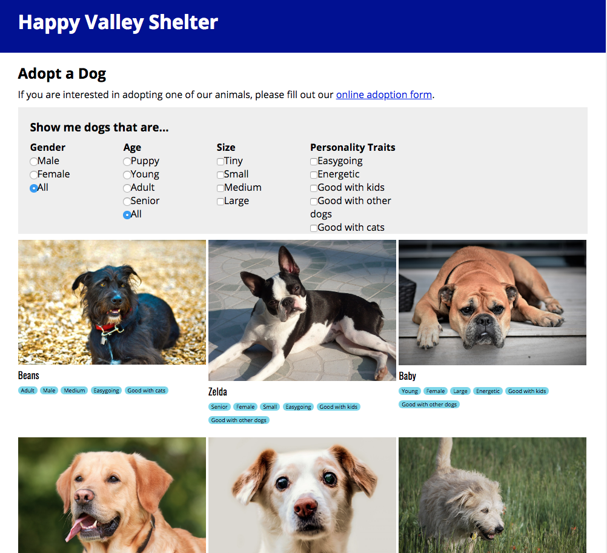

Welcome!
Software and Web developer with over 10 years of Technology Support experience (including helpdesk, networking, VoIP, CCTV, access control). I also offer technical and creative writing services to meet all your professional needs.
In October 2018, I completed the coding immersive cohort at Momentum Learning. There I learned more JavaScript and focused on Ruby on Rails to develop apps with SQLite and PostgreSQL. This added to my knowledge and experience with LAMP sites, content management systems such as Word Press and Joomla, and an acute focus on the end user experience. My background in IT Support, focused on client needs and desires, drives my development goals whether I serve in a position as a full-stack developer or back-end only.
Visit my portfolio to see my projects and what I'm currently working on. Visit my GitHub account for more at
github.com/JoannaDavidson.
I get deep satisfaction from making things work correctly for people. Problem solving, lateral thinking, and patience in communicating with those of various technical skill levels, from general public to C-level execs, to figure out what the real issue actually is.
Great communication extends outside of my techie life as a member of the North Carolina Writers' Network and the North Carolina Poetry Society. I also volunteer with the NC Harm Reduction Coalition and co-organize a clothing closet in Durham.
I look forward to interacting with you! Reach out to me at
joanna@shrikesong.com and connect via
LinkedIn.
Development Portfolio
PHIGGit - Rails app

Querulous - Q&A

Lazy River - glitch project

Happy Valley - glitch project

See the Pen CSS backgrounds by Joanna I. Davidson (@joannadavidson) on CodePen.
See the Pen Momentum by Joanna I. Davidson (@joannadavidson) on CodePen.
Durham, NC | joanna@shrikesong.com
Purpose
Creative professional and eager learner seeking to employ knowledge of Ruby on Rails and agile development along with experience focusing on end user satisfaction into a software development career.
Skills
- Languages
- Ruby on Rails | HTML5/CSS3 | JavaScript | LAMP sites | PHP | PostgreSQL
- Software
- MS Office, Visio | Exchange Server (2007, 2013) | Windows Server (2008, 2012), Active Directory
- Adobe Creative Cloud (Photoshop, Illustrator, InDesign, Acrobat Pro, Dreamweaver)
- Imaging and backups (Retrospect, Ghost, Clonezilla, Acronis
- Connectivity (PuTTY, Filezilla, Postman, BOSâNOVA)
- Windows, Mac OS, and Linux (RHEL/Fedora, Ubuntu, Knoppix, Kali Linux) devices
- Content Management Systems (Joomla, WordPress, MediaWiki)
- EHR/EMR systems (EPIC, Kareo, McKesson, AOD) | Library cataloging and OPAC systems
- Hardware
- Mitel phone (3300 ICP, Intertel/Mitel 5000, NuPoint Messenger) - Including analong/digital & VoIP
- Surveillance/CCTV (EverFocus, Honeywell, Ademco, custom PC)
- Meraki campus-wide WiFi mesh network devices and dashboard management.
- SonicWall (Firewall and WiFi access points)
- NAS, tape, and disk backups
- IBM system i servers (AS/400, i series)
- Access Control systems (Honeywell, KABA, Keri Systems)
- Dell and HP network switches
- Thin and Zero clients (configuration and deployment)
- Xerox and Konica-Minolta MFP systems
- Point-of-Sale terminals and peripherals
- Other
- Agile Development | Technical Writing, Creative Writing, Poetry | Public Speaking
- Proper network cable running, terminating, and labeling | Creating network diagrams
- De-escalation techniques, event marshaling/peacekeeping
- Harm reduction training and volunteering
- Familiar with HIPAA, HITECH, and PCI compliance
Technical Experience
- 2013–2015
- Galloway Ridge at Fearrington | Pittsboro, NC
- IT Support Specialist
- Administered phone/voicemail systems, migrating from analog/digital to VoIP
- Managed 300+ users and 200+ devices in Active Directory and Exchange Server
- Resolve issues and queries related to computer networks, hardware, and software
- 2007–2011
- SHOE SHOW, INC. | Concord, NC
- Technology Specialist
- Supervised CCTV and alarm systems for over 700 retail locations
- Resolve issues and queries related to computer networks, hardware, and software
- Configure and troubleshoot Point-of-Sale devices on call
- Run, terminate, and diagram network/phone cabling
- Maintained tape and disk backups
Education
- 2018
- Momentum Learning | Durham, NC
- Dedicated 12-weeks specializing in highly focused, immersive training centered on language fluency, object-oriented programming, and project-based learning.
- 1995–1998
- Catawba College | Salisbury, NC
- Pursued Political Science and Communication Arts.
Certifications
Other Work Experience
- 2017–Present
- Treehouse Literary Magazine | Durham, NC
- Poetry Editor
- Judging directly and with others on editorial board to determine inclusion into journal
- 2017–2018
- S&H Youth and Adult Services | Salisbury, NC
- Medical Records Specialist
- Digitized documents and entered information into EHR system
- Handled release of information requests
- Organized, retrieved, and assembled medical record charts
- 1997–2007
- Rowan Public Library | Salisbury, NC
- Library Assistant
- Processed, repaired, and withdrew library materials.
- Created labels for book plates in-house instead of sending off to printers
- Served public computer lab, helping patrons and co-workers with Internet access and technical questions
Memberships & Boards